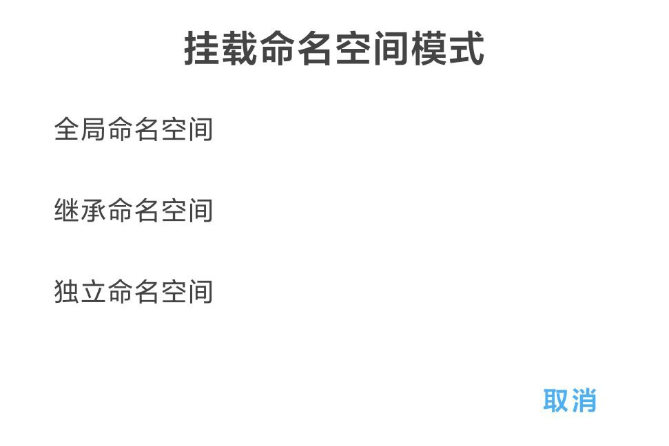
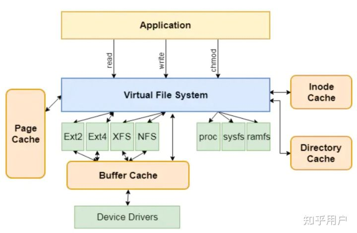
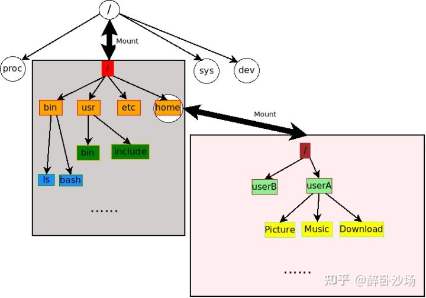

理解 Linux 的「挂载命名空间」机制
前言
经常玩机的小伙伴应该都能注意到，Magisk 中有一项设置叫「挂载命名空间模式」，里面有三个不明觉厉的选项：「全局命名空间」、「继承命名空间」和「独立命名空间」。初看这些选项，你可能会感到一头雾水，但是相信读完本文之后，你就能够对这些选项的作用，以及挂载命名空间的机制拥有一个基本的认识
在本文中，你将了解到：
- 挂载、挂载点 和 虚拟文件系统（VFS）
- 什么是挂载命名空间？
- 挂载命名空间的共享子树机制
- 传播类型如何影响挂载？
关于「挂载」
何为「挂载」？
手册中对于挂载的描述是这样的：
All files accessible in a Unix system are arranged in one big tree, the file hierarchy, rooted at /. These files can be spread out over several devices. The mount command serves to attach the filesystem found on some device to the big file tree. Conversely, the umount(8) command will detach it again. The filesystem is used to control how data is stored on the device or provided in a virtual way by network or other services.
大致意思是说，所有可被访问的文件都位于一棵以 / 为根的「文件树」上，而这些文件可能分布在不同的文件系统和设备，所谓「挂载」操作就是将设备上的文件系统附加到某个目录上，使得数据源可以在系统中使用。
而这棵「文件树」就是 Linux 的 VFS 虚拟文件系统，它作为一个抽象层，使得其上的应用程序可以使用统一的接口访问不同的文件系统：

下面这张图就十分形象地体现了挂载的本质：灰色和粉色的矩形表示了两个块设备（Block Device），箭头和标签组成了 VFS 的树状文件结构，而白色的圆圈就代表着挂载点。图中将粉色文件系统（可能是一块硬盘）中的根节点 / 挂载到了 VFS 的 /home 目录下，此后对 /home 的所有读写操作都将发生在被挂载的设备上（即图中的粉色文件系统）

挂载的一些特性
当我们挂载文件系统到一个非空的目录上时，其中本来的文件就像被遮盖隐藏了一样，在将挂载卸除之前，任何对该目录的访问都只能访问到挂载的文件系统内文件；当挂载卸除之后，原来的内容又会显现出来
挂载点之间是存在父子关系的，对于 VFS 上的一个目录，挂载点按挂载的先后顺序形成父子关系，即最后一个覆盖某一路径的挂载点将成为新挂载上来挂载点的父亲。通过一个简单的脚本，我们可以查看当前命名空间各个挂载点的关系：
1 | import re |
绑定挂载
绑定挂载（bind mount）是一种特殊的挂载操作，它可以将文件层次结构的一部分重新挂载到其它地方。简单做个实验，我们现在有这样的文件结构：
1 | . |
然后执行下面的命令：
1 | sudo mount --bind A C |
此时文件树的结构变成了下图所示的样子：
1 | . |
可以看到文件夹 C 下的文件已经变成了 a.txt，而此时如果我们尝试在文件夹 C 下新增一个文件，然后再次打印目录树：
1 | echo 233333 > C/flag.txt |
1 | . |
可以发现对 C 的操作直接同步到了目录 A 下，此时对目录 C 的操作就好像是直接在操作目录 A 一样，这就是绑定挂载的神奇之处。此外，绑定挂载允许选择一个只读文件系统中的目录作为挂载点，Magisk 正是利用了这一特性来实现对系统文件的替换和修改。
挂载命名空间
概述
刚才我们介绍了一些挂载的规则和特性，但这依然无法解释为何在不同进程的视角下 VFS 文件树可以拥有不同的结构，所以下面正式引出挂载命名空间的概念：
这里摘录一段对挂载命名空间的介绍：
挂载命名空间是第一个添加到 Linux 的命名空间类型，出现在 2002 年的 Linux 2.4.19 中。它们可隔离命名空间中的进程所看到的挂载点列表。换言之，每个挂载命名空间都有自己的挂载点列表，这意味着不同命名空间中的进程可以看到并操作单个目录层次结构的不同视图。
当系统首次启动时，有一个单一的挂载命名空间，即所谓的“初始命名空间”。带 CLONE_NEWNS 标志的 clone()（在新命名空间中创建新子进程）或 unshare()（将调用方移到新命名空间中）可创建新的挂载命名空间。当新的装挂载名空间被创建时，它将接收 clone() 或 unshare() 的调用者的命名空间的挂载点列表的拷贝。
在 clone() 或 unshare() 之后，可以在每个命名空间中独立地添加和删除挂载点（通过 mount() 和 umount() ）。对挂载点列表的更改（默认情况下）仅对进程所在的挂载命名空间中的进程可见；这些更改在其他挂载命名空间中不可见。
挂载命名空间有多种用途。例如，可以提供文件系统的每个用户视图。还有其它用途，可以为新的 PID 命名空间挂载 /proc 文件系统，而不会对其它进程造成副作用，还可通过 chroot() 将进程隔离到单个目录层次结构中。在某些用例中，挂载命名空间与绑定挂载一起使用。
简言之，挂载命名空间提供了一种机制，能够让不同进程「视角」下的文件系统呈现出不同的结构和内容，我们所熟知的 Docker 正是利用了这一技术来实现容器之间的隔离。
API
有三个较为常见的系统调用与命名空间有关：clone()、unshare() 和 setns()
clone()
1 | int clone(int (*fn)(void *), void *stack, int flags, void *arg); |
允许在新的命名空间中创建一个子进程，通过指定不同的 CLONE_NEW* 标志位，可以控制需要分离的命名空间类型。
unshare()
1 | int unshare(int flags); |
与 clone() 类似，但 unshare() 用于分离调用者的命名空间。
setns()
1 | int setns(int fd, int nstype); |
将调用者移动到一个现有的命名空间，fd 为一个指向 /proc/[pid]/ns 下魔法链接的文件描述符，nstype 用于控制需要加入的命名空间类型，对于已知命名空间类型的 fd，将该标志位设置为 0 即可
共享子树
概述
实现挂载命名空间之后，又带来了新的问题。假如已经有多个进程工作在不同的挂载命名空间之中，此时用户向电脑插入一块 U 盘（/dev/sda），如果要使所有进程都能访问这块 U 盘，则需要在它们各自的命名空间之中一一进行挂载，这显然不像是一款设计精良的操作系统上应该出现的事情。于是在 2006 年初，共享子树特性被添加到了 Linux 2.6.15 中，它允许自动、可控地在命名空间之间传播挂载和卸载事件
一个典型的例子是：当我们在 Termux 中挂载磁盘镜像时，在 MT 管理器中看不到其内容，而当我们在 adb shell 环境下挂载同样的镜像时，任何地方都可以看到。
传播类型
在共享子树特性下，每个挂载点都由「传播类型」标记，「传播类型」控制着挂载点下的挂载和卸载事件是否会传播到「对等组」中的其它挂载点（关于对等组的概念，会在接下来介绍），一共有四种不同的传播类型：
MS_SHARED
共享挂载。该挂载点与同一对等组中的其它挂载点同步传播挂载和卸载事件
MS_PRIVATE
私有挂载。不属于任何对等组，所以也不会发生事件传播
MS_SLAVE
从属挂载。介于共享挂载与私有挂载之间，它可以接收对等组中其它挂载点的挂载和卸载事件，但不会将自身的变化传播到其它挂载点
MS_UNBINDABLE
不可绑定挂载。与私有挂载类似，不属于任何对等组，此外，此挂载点不可作为绑定挂载的源
对等组
对于绑定挂载，其事件传播细节非常复杂，故以下所有讨论均未考虑绑定挂载
对等组是一组挂载点，他们会互相传播挂载和卸载事件，当传播类型是共享的挂载点创建新的命名空间时，对等组会获得新成员。对等组和传播类型共同控制着事件在各个命名空间中的传播，考虑下面一种情况：
M1、M2、M3 是一组共享挂载，子挂载 A1、A2、A3 分别挂载到 M1、M2、M3 的目录 x 上，接下来有 C1、C2、C3 再次分别挂载到 M1、M2、M3 的目录 x。
如果此时卸载 C1，M1 会将此卸载事件传播到 M2 和 M3，通知其「卸载挂载点 C」，所以最终 C1、C2、C3 都将被卸载，但如果 C2、C3 下有子挂载点，则他们的卸载操作会静默失败。
我们同样可以通过读取 /proc/self/mountinfo 来查看当前进程的对等组和传播类型信息：
1 | 36 35 98:0 /mnt1 /mnt2 rw,noatime master:1 - ext3 /dev/root rw,errors=continue |
一般而言只有 0 或 1 项，冒号前面的 shared/master 等信息表示其传播类型，后面的数字表示组号，若没有标记，则表示其为私有挂载
-
shared:X：对等组中的共享挂载，会将挂载事件传播到组中其它成员 -
master:X：表示此挂载从属于对等组X -
propagate_from:X：接收从组X发出的共享挂载，这个标签总是与master:X一同出现
Android 中的挂载命名空间
找一部 Android 手机，查看 init、adbd、zygote64、system_server 等进程的挂载情况，发现 adbd 进程与 init 一样，都属于初始命名空间；而 zygote64、system_server、应用进程则分别属于不同的挂载命名空间，且它们的根挂载点从属于 init 进程的根挂载点
事实上，zygote 进程初始化时会从初始命名空间 unshare，并将所有挂载点递归改为从属挂载，并在之后的 nativeForkAndSpecialize() 中，再次调用 unshare，为每个应用分离命名空间
总结
-
命名空间服务于进程，即命名空间中可以存在许多进程，每个进程都属于一个挂载命名空间
-
挂载命名空间中有一个挂载点列表，记录着此命名空间下所有挂载点的信息
-
不同命名空间中的挂载点可以组成对等组，挂载和卸载事件遵循传播类型标记在各个成员之间传播